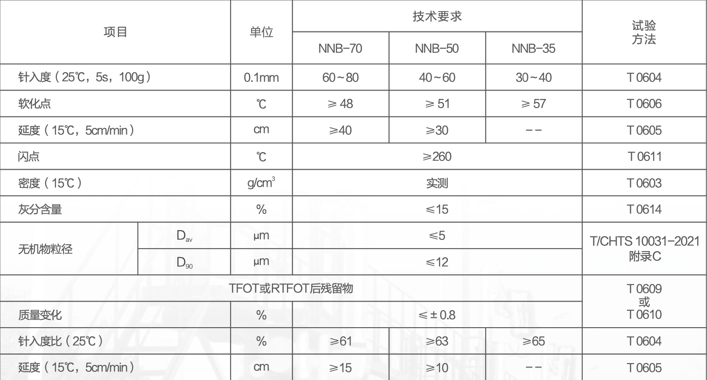

重交天然沥青特性
重交天然沥青NNB ，利用天然沥青高温稳定性佳，抗水损，耐老化特性，开发的天然沥青改性沥青结合料，适 用于AC，ATB等混合料类型。其动稳定度比道路石油沥青混合料动稳定度要求高一倍，且抗水损性能优异。
NNB主要技术指标

NNB的存储要求
* 到达施工现场后，应存储在带有搅拌设备的沥青罐中，不可与其他型号沥青混存。
* 存储温度应满足以下要求:
1. 存储温度不应超过150°C，建议存储温度:140-150°C
2. 超过48h,但一周内使用的，宜将存储温度控制在100°C以内。
3. 存放超过一周的，应自然降温.